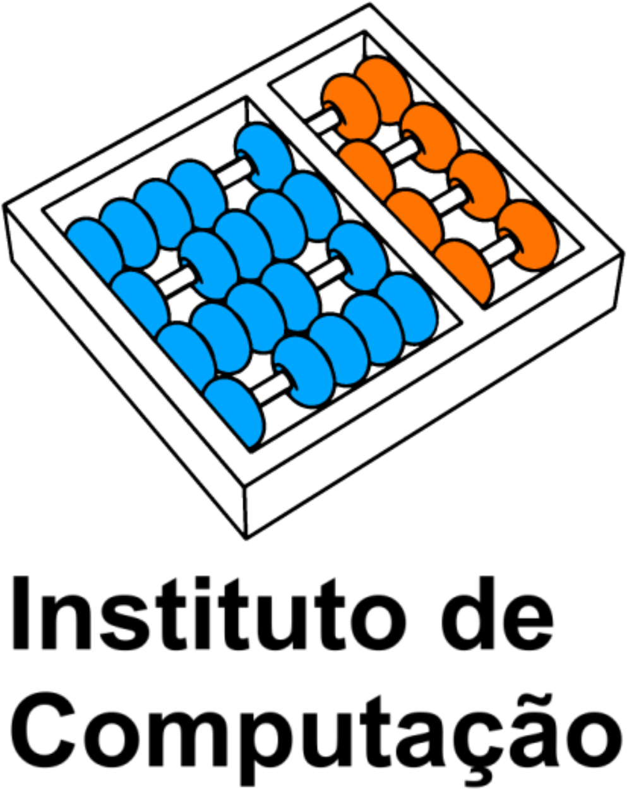
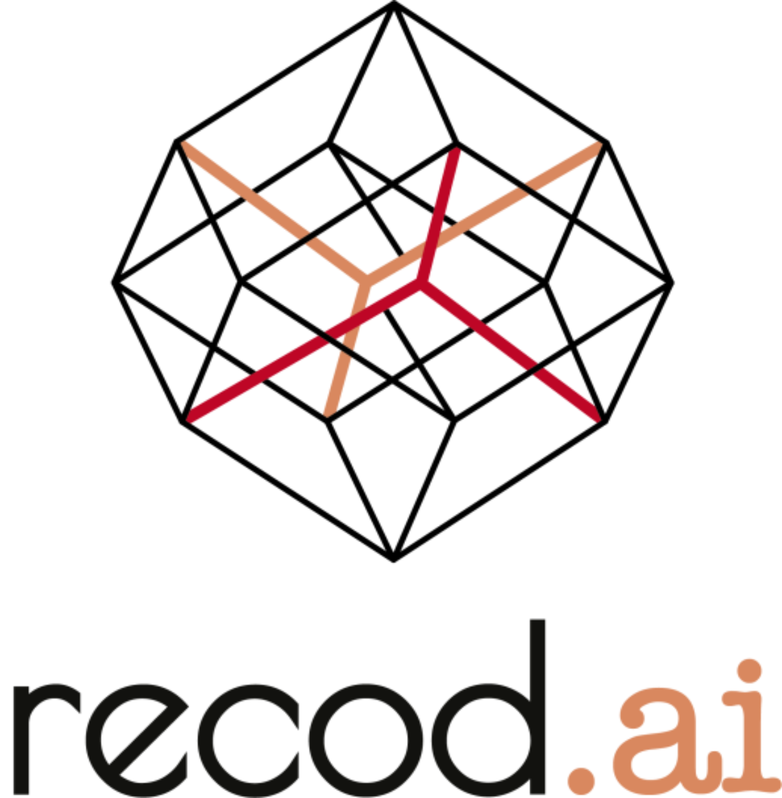

Self-supervised Learning of Contextualized Local Visual Embeddings
Thalles Santos Silva, Helio Pedrini, Adín Ramírez Rivera
4th Visual Inductive Priors for Data-Efficient Deep Learning Workshop
Thalles Santos Silva, Helio Pedrini, Adín Ramírez Rivera
4th Visual Inductive Priors for Data-Efficient Deep Learning Workshop
We present Contextualized Local Visual Embeddings (CLoVE), a self-supervised convolutional-based method that learns representations suited for dense prediction tasks. CLoVE deviates from current methods and optimizes a single loss function that operates at the level of contextualized local embeddings learned from output feature maps of convolution neural network (CNN) encoders. To learn contextualized embeddings, CLoVE proposes a normalized multi-head self-attention layer that combines local features from different parts of an image based on similarity. We extensively benchmark CLoVE’s pre-trained representations on multiple datasets. CLoVE reaches state-of-the-art performance for CNN-based architectures in 4 dense prediction downstream tasks, including object detection, instance segmentation, keypoint detection, and dense pose estimation.
Models trained with ResNet50 encoders.
| Epochs | Multicrop | URL | |
|---|---|---|---|
| CLoVE | 50 | 2x224 + 6x96 | Checkpoints |
| CLoVE | 200 | 2x224 + 6x96 | Checkpoints |
| CLoVE | 400 | 2x224 + 6x96 | Checkpoints |
| Code | arXiv | OpenReview |
|---|
@inproceedings{silva2023self,
title={Self-supervised Learning of Contextualized Local Visual Embeddings},
author={Silva, Thalles and Pedrini, Helio and Ram{\'\i}rez, Ad{\'\i}n},
booktitle={Proceedings of the IEEE/CVF International Conference on Computer Vision},
pages={177--186},
year={2023}
}
Thalles Santos Silva
Helio Pedrini
Adín Ramírez Rivera
The computations were performed in part on resources provided by Sigma2---the National Infrastructure for High Performance Computing and Data Storage in Norway---through Project NN8104K. This work was funded in part by the Research Council of Norway, through its Centre for Research-based Innovation funding scheme (grant no. 309439), and Consortium Partners. This study was financed in part by the Coordenação de Aperfeiçoamento de Pessoal de Nível Superior---Brasil (CAPES)---Finance Code 001
|  |  |
|---|